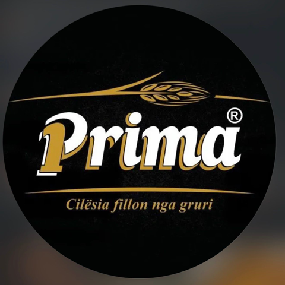

01
Mielli Prima
Miell Tip 400 & 450 për bukë, integral, semolinë, ëmbëlsira, byrek dhe pica — në paketime 1 kg dhe 25 kg, për shtëpinë dhe profesionistët.
Kërkoni katalogun
Cilësia fillon nga gruri
Që nga viti 1995 — Tiranë, Shqipëri
Prodhuesi më i madh i miellit dhe pastave në Shqipëri. Nga mulliri Bloja te trafilat e bronzit — sjellim përsosmëri në çdo kokërr, çdo ditë.


Kompania
Kompania PRIMA përbëhet nga tre fabrika: mulliri i miellit Bloja — i themeluar në 1995 dhe më i madhi në Shqipëri me 400 ton përpunim në ditë; fabrika e Semolinës nga gruri i fortë me 100 ton në ditë; dhe fabrika e pastave Prima, me tre linja dhe kapacitet 60 ton në ditë.
Mielli dhe semolina prodhohen me teknologjinë më moderne italiane, ndërsa pastat dalin nga linjat PAVAN — ndër kompanitë më të mira në Itali e botë. Rezultati: 15 lloje miellrash dhe 45 lloje pastash, të gjitha me të njëjtin premtim cilësie.
Produktet Tona
Nga mielli i përditshëm te pastat artizanale me trafila bronzi — i gjithë portofoli mban të njëjtin premtim.
Miell Tip 400 & 450 për bukë, integral, semolinë, ëmbëlsira, byrek dhe pica — në paketime 1 kg dhe 25 kg, për shtëpinë dhe profesionistët.
Kërkoni katalogun
Miell force nga gruri kanadez Manitoba — universal, për pica, ëmbëlsira dhe petë e byrek. Ideal për brumëra me fermentim të gjatë.
Kërkoni katalogun
E prodhuar nga cilësia më e lartë e grurit të fortë — italian, kanadez (Western Amber Durum) dhe vendas. Paketim me letër ose qese.
Kërkoni katalogun
Nga 100% gruri italian, me trafila bronzi dhe tharje e ngadaltë. 0% pesticide, 0% glifosat, 0% GMO. E punuar si dikur.
Kërkoni katalogun
Mbi 40 forma — nga spaghetti e penne te fusilli, conchiglie e stelline — nga gruri i fortë italian, për tregun vendas dhe atë të eksportit.
Kërkoni katalogunCilësia
Përzgjedhim grurin më të mirë — italian, kanadez Manitoba dhe vendas — dhe e kontrollojmë kokërr pas kokrre para se të hyjë në mulli.
Mulliri Bloja, më i madhi në Shqipëri, përpunon deri në 400 ton në ditë me teknologjinë më moderne italiane.
Tre linja PAVAN — pasta lunga, pasta corta dhe nidi artizanale. Trafilat e bronzit japin sipërfaqe të ashpër që e kap salcën.
Qendra jonë e Kërkimit dhe Kontrollit kryen çdo ditë analiza kimike e fizike dhe zhvillon produkte të reja sipas kërkesës së klientit.
Paketim modern me gjurmueshmëri të plotë — produktet tona udhëtojnë drejt tregjeve brenda e jashtë vendit.
Të certifikuar sipas standardeve ndërkombëtare
Pse Prima
Pastat tona dalin nga gruri më i mirë italian dhe kanadez, i përzgjedhur me kujdes.
Pasta Premium pa pesticide, pa glifosat dhe pa GMO — vetëm grurë dhe ujë.
Tërheqja në bronz jep teksturën autentike që e dallon pastën artizanale.
Linja prodhimi nga njëra prej kompanive më të mira në Itali dhe në botë.
Që nga viti 1995, lider i tregut shqiptar të miellit dhe pastave.
ISO 22000, ISO 9001, HACCP dhe UNI 10854 — laboratori ynë teston çdo lot.
Private Label
PRIMA pranon porosi me Private Label për të gjitha produktet e miellit dhe të pastave. Logoja dhe paketimi juaj, prodhuar me të njëjtin standard që na bëri lider të tregut.
Kërkoni një ofertëLajme & Përditësime

Një vështrim nga afër mbi mullirin më të madh në Shqipëri dhe teknologjinë italiane që e mban.
Lexo më shumë
Si e garantojmë pastën artizanale pa pesticide, pa glifosat dhe pa GMO — nga fusha te kutia.
Lexo më shumë
Gjithnjë e më shumë partnerë zgjedhin paketimin me markën e tyre për miell e pasta.
Lexo më shumëKontakt
Distributorë, furra, pastiçeri dhe partnerë biznesi — na tregoni çfarë ju nevojitet dhe ekipi ynë do t'ju përgjigjet brenda një dite pune.